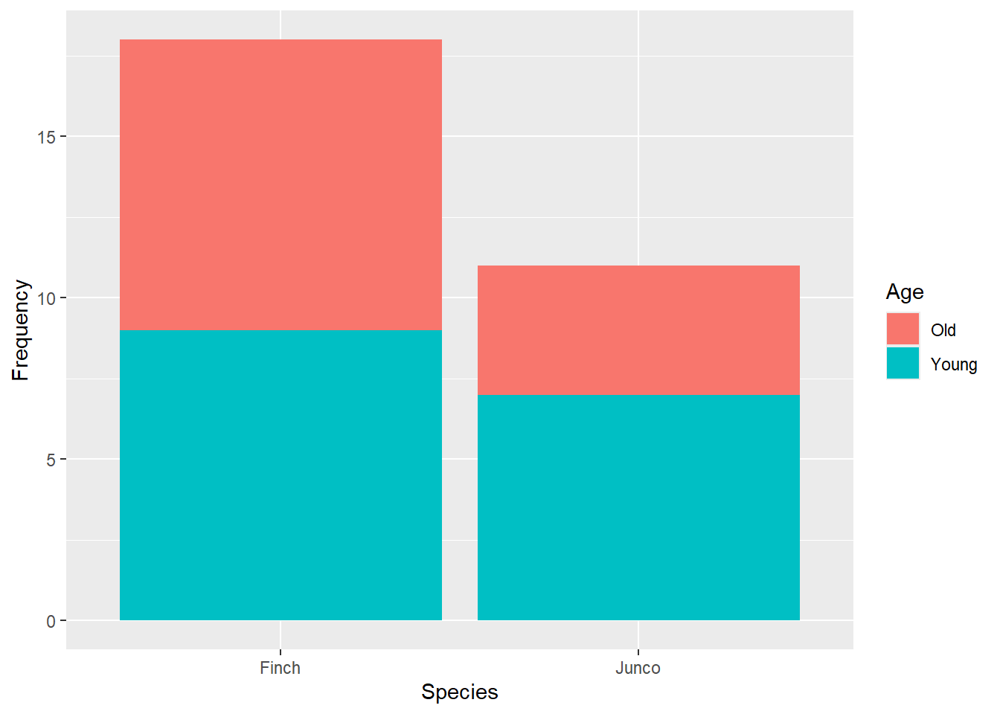
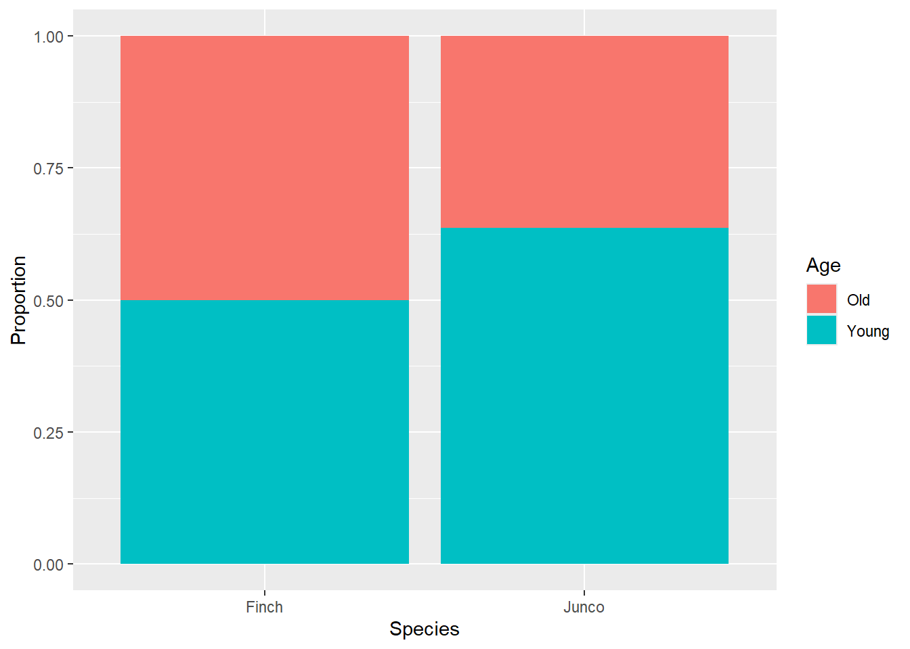
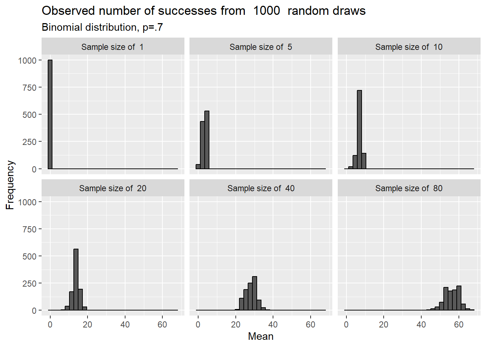
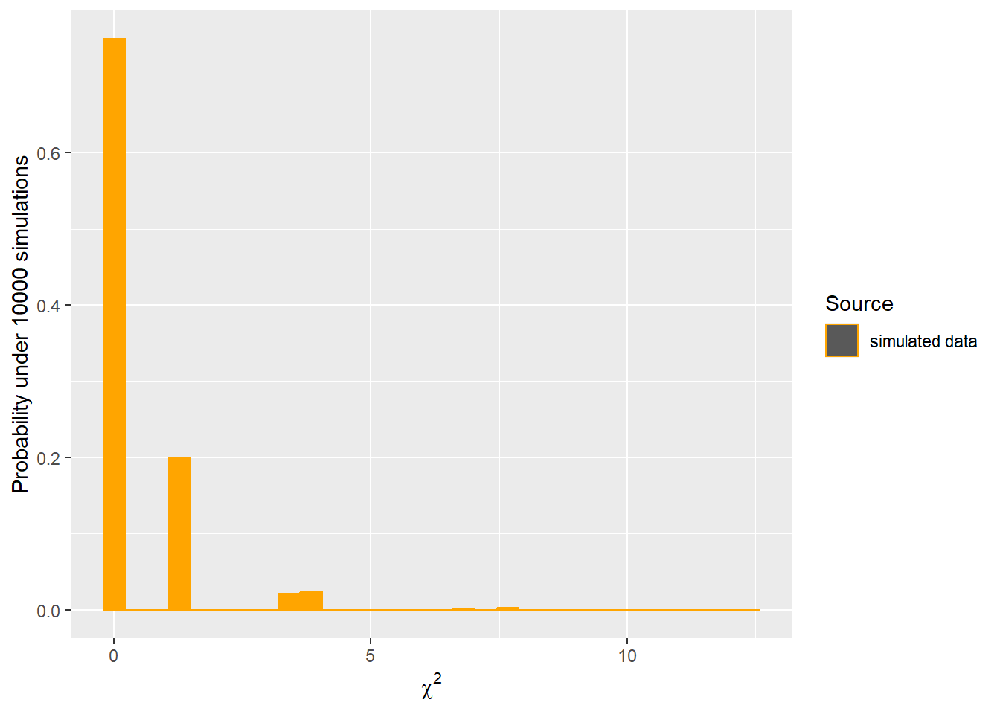
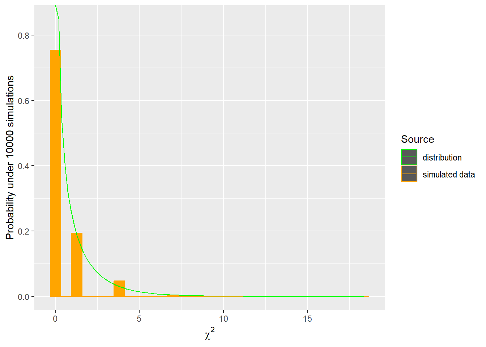
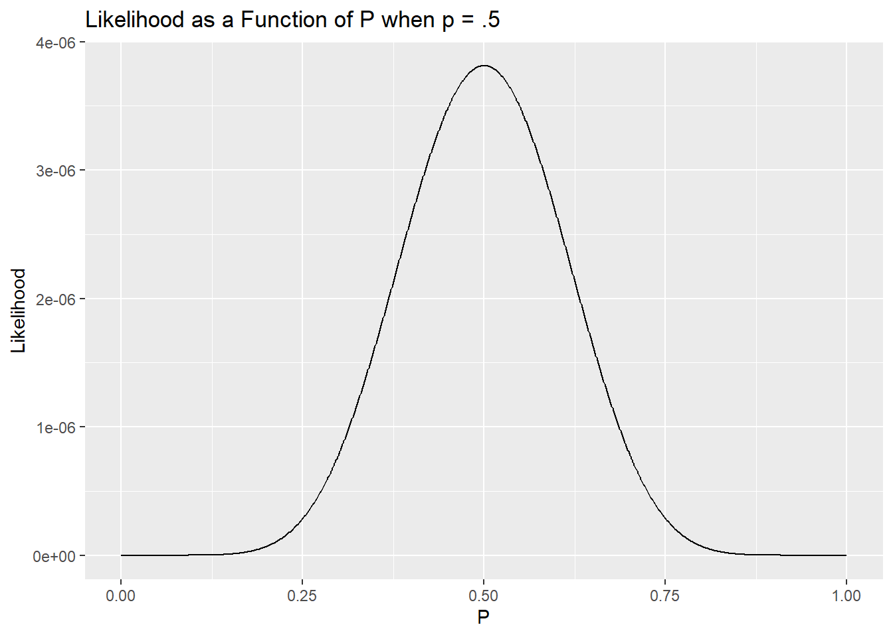

Now that we’ve covered hypothesis testing for both discrete and continous data, we’ll extend these ideas to compare differences among groups. In addition considering these differences, the same test we’ll let us consider if proportions follow a given ratio.
Example: Back to the birds
Let’s return to our bird example Klem (1989). We previously found that purple finches did not strike windows at proportions that might be predicted by population demographics using a binomial test. However, what if instead we wanted to compare the collision rate of old vs young birds among several species?
Cephas, CC BY-SA 3.0 <https://creativecommons.org/licenses/by-sa/3.0>, via Wikimedia Commons
Let’s start simple and just compare purple finches and dark-eyed juncos.
Klem’s sample of finches totaled 18, with 9 being older (after hatching year). For juncos, 4 of 11 sampled birds were older. We could put this data in a table.
Observed
Finch
Junco
Row Totals
9
4
13
9
7
16
Column Totals
9
9
N = 29
First, we could plot our data
birds_original <-data.frame(Age =c("Old","Young","Old", "Young"),Species =c("Junco", "Junco", "Finch", "Finch"),Number =c(4, 7, 9, 9))library(ggplot2)ggplot(birds_original, aes(x= Species, y = Number)) +geom_col(aes(fill = Age)) +labs(x="Species", y="Frequency", main ="Age at collision for juncos and finches")

Given the different sampling sizes, a mosaic plot might help in visually comparing ratios.
ggplot(birds_original, aes(x= Species, y = Number)) +geom_col(aes(fill = Age), position ="fill")+labs(x="Species", y="Proportion", main ="Age at collision for juncos and finches")

Before we test this, we need to decide on an hypothesis. Although both species were predicted to occur at 3:1 ratios in the wild, that’s not what we are considering here. Instead, we want to know if the likelihood of old vs young birds being in our samples differed for the species. Put another way, we are asking if the proportion of young vs old is contingent on species. These tests are often called contingency analysis, and the table we started with may be referred to as a to as a contingency table.
If the proportion of old vs young birds differ among species, it could be because the age structure of the focal populations are different or because the birds differ in their relationship to glass at different ages. However, we are still testing a distribution-based parameter.
\[
\begin{split}
H_O: p_{finches} = p_{juncos} \\
H_A: p_{finches} \neq p_{juncos} \\
\textrm{ where p is likelihood of sampled bird being older}\\
\end{split}
\]
Put another way,we want to test if p is independent of species.
\[
\begin{split}
H_O: \textrm{Probability of older bird hitting window is independent of species} \\
H_A: \textrm{Probability of older bird hitting window is dependent of species} \\
\end{split}
\]
This formulation is important, because it helps form our predictions under the null hypothesis. What would we expect if p did not differ among species? If age and species were independent, we could expect
\[
\textrm{Pr[ Old AND Given speciesuse] = Pr[given species] * Pr[Old]}
\]
Since we have 13/29 birds are old, we should expect
Observed
Finch
Junco
Row Totals
18 * 13/29
11 * 13/29
13
18 * 16/29
11 * 16/29
16
Column Totals
9
9
N = 29
In order to carry out a sampling experiment to consider noise from this expected outcome, we have to determine the p parameter to use for our population. This is because under the null hypothesis, there is only one population- any observed difference is just due to chance!
However, we have an issue - we don’t know p. In our binomial experiment it was set by our null hypothesis. Now we are comparing p among species, but that doesn’t set a population distribution.
To fix this, we go back to our normal approximations. We have shown for large sample sizes the binomial distribution follows the central limit theorem, with \(Np\) and \(p\) both showing a normal distribution.
sampling_experiment_long$Sample_size <-factor(sampling_experiment_long$Sample_size, levels =c("1","5","10", "20", "40", "80"))levels(sampling_experiment_long$Sample_size) <-paste("Sample size of ", levels(sampling_experiment_long$Sample_size))ggplot(sampling_experiment_long,aes(x=mean)) +geom_histogram(color="black") +labs(title=paste("Observed number of successes from ", number_of_simulations, " random draws"),subtitle ="Binomial distribution, p=.7", x="Mean",y="Frequency")+facet_wrap(~Sample_size, nrow =2)
`stat_bin()` using `bins = 30`. Pick better value with `binwidth`.

So, we can replace the binomial distribution in our sampling experiment with a normal population. To use this approach, we estimate a value for p, \(\hat{p}\), from the data, and let
We then draw only 1 draws this distribution. Why only 1? Because we need to keep the sample sizes the same, so the row and column totals are set! Remember this for a moment. After we draw 1 number, we fill in the rest.
`stat_bin()` using `bins = 30`. Pick better value with `binwidth`.

Once we carry out the sampling experiment, we can Z-transform our cell data(because they are normal now!). The results for a single cell would follow a N(0,1) distribution (the Z). If we wanted, we could square these outcomes (which would then follow a \(\chi^2\) distribution, by definition), and, since we have 4 cells, add them. The resulting variate would follow a \(\chi^2\) distribution with 1 degree of freedom (since we drew 1 numbers for the free “cell” in our table). Finally, because of all the p’s above, we could actually rewrite all of this as
\[
V=\sum_{i=1}^{n}{\frac{{(Observed-Expected)}^2}{Expected}} \textrm{where n is number of cells}
\]
Contingency analysis using the \(\chi^2\) test
The resulting test is called a \(\chi^2\) test. Note this takes count-based data and uses a continuous distribution to describe it, so it’s an approximate test.
`stat_bin()` using `bins = 30`. Pick better value with `binwidth`.

We can carry out this test in R using the chisq.test function.
This function requires a matrix of aggregated values (counts for each cell). Currently we have a data frame (birds). To make this work, we have a few options.
We can input the data directly as a matrix, specifying the string, the number of rows and columns, and how we entered the data in regards to rows (remember ?chisq.test)
chisq.test(matrix(c(9,4,9,7), 2, 2, byrow=T))
Warning in chisq.test(matrix(c(9, 4, 9, 7), 2, 2, byrow = T)): Chi-squared
approximation may be incorrect
If the data is in wide data frame (meaning more than one measured outcome per row, so measuring the young and old as columns in the data frame) or we make it look like that, we can use the data directly from the data frame. Consider the difference in format. This is long data (one measure per row):
birds_original
Age Species Number
1 Old Junco 4
2 Young Junco 7
3 Old Finch 9
4 Young Finch 9
Warning in chisq.test(cbind(birds_wide$Finch, birds_wide$Junco)): Chi-squared
approximation may be incorrect
Pearson's Chi-squared test with Yates' continuity correction
data: cbind(birds_wide$Finch, birds_wide$Junco)
X-squared = 0.11002, df = 1, p-value = 0.7401
As long as we specify the table, we are ok. Note each of these tests notes 1 df. The degrees of freedom associated with this test are based on the number of free cells (or, alternatively, the number of cells minus the parameters you had to fill in!). This typically can be calculated as (# of columns -1)*(# of rows -1). They each also note a p-value greater than .05. This would suggest we should fail to reject the null hypothesis.
Each result also tells you this is an approximation (as we already noted!). Since the test is approximate, by default R applies Yate’s continuity correction to data focused on 2x2 tables. Some argue this correction is too strict, and you can turn it off in R (correct=F argument). You can also choose to simulate the outcome instead (simulate.p.value = T), but note this will still be an approximate answer since we can’t do every single sample.
The output also indicate the results may be incorrect? Why? In order for our normal approximation to work, we need large samples and a \(\hat{p}\) that is not near 0 or 1. Together, these mean our expected values for most cells (actually, >80%) can not be less than 5., and no cell can have an expected value of less than 1. If these assumption are not met(or are close), R will warn us. We can check expected values using
In this case, 25% of the cells (1/4) has an expected value of less than 5.
Other options
Fisher’s test
If this is the case for a 2x2 table, we can use a Fisher’s test instead
fisher.test(matrix(c(9,4,9,7), 2, 2, byrow=T))
Fisher's Exact Test for Count Data
data: matrix(c(9, 4, 9, 7), 2, 2, byrow = T)
p-value = 0.7021
alternative hypothesis: true odds ratio is not equal to 1
95 percent confidence interval:
0.2997173 11.0799590
sample estimates:
odds ratio
1.716435
As opposed to resampling from a null distribution, Fisher’s test considers all (or lots) of ways the data could be re-arranged (or permuted) and then computes a p-value using that approach. This means Fisher’s test works for any sample size. It is an exact test if all possible combinations are considered (but they rarely are).
Notice the output reports the odds ratio. This ratio is found by dividing odds in one group by odds in another (thus a ratio). Odds are the probability of one outcome over another. For our data, this could be considered (old/young(finches)) divided by (old/young(juncos)), (9/9)/(4/7)=63/36. This is close to what we saw in the output; slight differences occur since the fisher.test function returns a conditional estimate of the odds ratio.
Note odds differ from relative risks, which compare the probability of an event occurring (or not) among 2 groups. The results are similar for rare events (think about why!) but not for common events. For more, see Altman, Deeks, and Sackett (1998)Davies, Crombie, and Tavakoli (1998) or this [video and paper]{https://www.bmj.com/content/348/bmj.f7450}(target=“_blank”) Grant (2014).
G test
Another option, the G test, uses a slightly different approach as well. Instead of resampling, the test uses likelihood to compare outcomes. Likelihood asks how likely we were to observed a given set of data given parameter values.
For an easy example of likelihood, let’s go back to a one-sample example and focus on just our new finch data. We have 9 old and 9 young birds, so we have a signal of .5 for p. We can use likelihood to calculate how likely our data was under multiple values of p (ranging from 0 - 1, the only options here) and compare the likelihood of those outcomes White (n.d.).

Similar to calculating sum square errors from models, what is most likely is what we saw, but we know there is always noise in the data. Thankfully, it turns out the ratio of likelihood values follow a \(\chi^2\) distribution and can thus provide a p-value to compare possible models. We will return to likelihood-based approaches later, in fact, as they can be used for any dataset we can generate a model for and can be used to compare multiple models.
For our current contingency analysis, we can develop a model where a species parameter impacts the likelihood and one where it does not (not fully shown here, but shown by Patrone (2022)).
The GTest function from the DescTools package to employ this test.
Log likelihood ratio (G-test) test of independence without correction
data: matrix(c(9, 7, 9, 4), 2, 2, byrow = T)
G = 0.51774, X-squared df = 1, p-value = 0.4718
What about more than 2 groups?
These ideas can be extended to compare more than 2 groups with a few important caveats.
The Fisher test is even less exact since all permutations of the data can seldom be explored
More importantly, if we reject the null hypothesis we need to do follow-up tests.
Let’s explore this idea with the Klem data. In addition to considering impacts of age, Klem also recorded the sex (coded as male/female) for each bird. He had data on 4 species.
Log likelihood ratio (G-test) test of independence without correction
data: matrix(c(6, 5, 7, 7, 12, 7, 11, 3), nrow = 2, byrow = T)
G = 3.8087, X-squared df = 3, p-value = 0.2829
Regardless, we see all p>.05. What does this mean?
Post-hoc comparisons: Controlling for the FWER
When we compared one group to a set value or two groups to each other, this was easy: it meant our focal parameter was the same between the groups or between expected and observed values. For more than 2 groups, it means the parameters is also means the parameter of interest does not differ among the groups. In other words, our null hypothesis is
where p is the proportion of the population that are males. Here, this means all species have similar male/female ratios (at least given our samples). This is an example of a very useful insignificant result. This study would have been interesting regardless of outcome.
However, let’s imagine we had data on another species (catbirds in the table below).
Observed
Finch
Junco
Robin
Cardinal
Catbird
Male
6
5
7
7
30
Female
12
7
11
3
7
When we run the test (notice I immediately checked expected values, or assumptions, which is a good habit to get into)
We now have a significant p-value (.002). What does this mean now?
A significant p-value from a multi-population test means the parameter is not the same for all groups. However, it does not necessarily mean the parameter is different for every group. Remember, our null hypothesis is (now)
Either of these outcomes would reject the null hypothesis that proportions were the same for all species, but they mean different things.
In general, after we show using an overall, or omnibus, test that there is a difference among populations, we need to determine which ones actually differ from the others. We do this using post-hoc comparisons to compare specific groups.
We can technically choose which comparisons to focus on. For example, you can do compare all possible pairs or just certain combinations. Why would this matter?
The answer has to do with family-wise error rate (FWER). Remember, for every test we run we have an \(\alpha\)% chance of a type 1 error. If we run many tests, the likelihood of making a type 1 error increases (the rate of increase depends on how independent the tests are, but we need to control for it.
XKCD 882: Significant
For this reason, we modify our “used” \(\alpha\) for our post-hoc tests. There are many approaches to doing this, but they all depend on how many tests we run - so the more post-hoc comparisons we include, the harder it may be to find a significant difference among focal pairs.
To illustrate this, we will first use a very simple method that is no longer recommended but is useful as a starting point. One options is to control the FWER by dividing \(\alpha\) by the number of post-hoc tests we intend to run. For the above example, if we do all pairs comparisons we would be running 10 comparison (4+3+2+1…). So instead of using .05 as a cutoff, we would use .005.
First, it helps to make a table with row and column names (which are slightly different than headers and very different than a column of names in R).
Then we can run the test with the pairwiseNominalIndependence function from the rcompanion package. Note the function needs a table or matrix and to know which method to use to compare rows or columns. Looking at the table
bird_ratio_table
Finch Junco Cardinal Robin Catbird
Male 6 5 7 7 30
Female 12 7 11 3 7
Let’ s us see we want to compare columns.
library(rcompanion)
Warning: package 'rcompanion' was built under R version 4.2.3
Warning in chisq.test(Dataz, ...): Chi-squared approximation may be incorrect
Warning in chisq.test(Dataz, ...): Chi-squared approximation may be incorrect
Warning in chisq.test(Dataz, ...): Chi-squared approximation may be incorrect
Warning in chisq.test(Dataz, ...): Chi-squared approximation may be incorrect
Warning in chisq.test(Dataz, ...): Chi-squared approximation may be incorrect
Warning in chisq.test(Dataz, ...): Chi-squared approximation may be incorrect
The test then shows all-pair comparisons with regular (what we should compare to .005 now, but we don’t usually know that!) and adjusted p-values (which have compensated for multiple tests so we can use our normal .05 cutoff- use this one!) for each test we have covered (you should use a post-hoc that matches what you did for the overall, or omnibus, comparison).
You can order and display these differently if it helps. For example, if we used the \(\chi^2\) test.
We see that catbirds different from finches and cardinals in the proportion of males and females, while all other species do not differ. Note the un-adjusted p-value for this comparison pair is the same we would have found from just comparing the two groups
However, this comparison is very conservative. Many other options exist, and we will explore two here.
The sequential Bonferroni, or Holm’s, method, allocates your \(\alpha\) to accept as many tests as signficant as possible while still controlling for the FWER. To do this, it orders the post-hoc tests by p-value, smallest to largest. It then rejects the null hypothesis attached to the smallest p-value and subtracts that p-value from \(\alpha\). It continues to do this until \(\alpha\) is too small to reject the next smallest p-value. I think of it as buying p-values with \(\alpha\).
We can use this approach by simply changing the method. Let’s also order our results again for viewing.
Warning in chisq.test(Dataz, ...): Chi-squared approximation may be incorrect
Warning in chisq.test(Dataz, ...): Chi-squared approximation may be incorrect
Warning in chisq.test(Dataz, ...): Chi-squared approximation may be incorrect
Warning in chisq.test(Dataz, ...): Chi-squared approximation may be incorrect
Warning in chisq.test(Dataz, ...): Chi-squared approximation may be incorrect
Warning in chisq.test(Dataz, ...): Chi-squared approximation may be incorrect
Although we still reject the same null hypotheses, notice the adjusted p-value for the junco:catbird comparison is slightly lower. This is due to the “holm” approach.
A final approach we will demonstrate is called the False Discovery Rate, or FDR, approach. It’s similar to the Holm’s approach in that it starts by ordering the post-hoc tests by p-value, smallest to largest. However, it then rejects the null hypothesis attached to the largest p-value that is < \(\alpha\) and subsequently rejects all null hypotheses attached to smaller p-values. It is thus less conservative but basically attempts to maximize the number of hypotheses you reject given a set \(\alpha\).
Warning in chisq.test(Dataz, ...): Chi-squared approximation may be incorrect
Warning in chisq.test(Dataz, ...): Chi-squared approximation may be incorrect
Warning in chisq.test(Dataz, ...): Chi-squared approximation may be incorrect
Warning in chisq.test(Dataz, ...): Chi-squared approximation may be incorrect
Warning in chisq.test(Dataz, ...): Chi-squared approximation may be incorrect
Warning in chisq.test(Dataz, ...): Chi-squared approximation may be incorrect
Again, we reject the same null hypotheses, but again you also observe a slight change in p-values. This indicates the important point here is controlling for the FWER. In later chapters we will expand this idea further by focusing on specific subsets of tests or comparisons, although these approaches are less commonly used.
Goodness of fit tests
Above we focused on comparing proportions among multiple groups using the \(\chi^2\) test. This same approach (comparing expected vs observed values) can also be used to see if a single sample follows a specific distribution. In general, these tests are used to test hypotheses in the form of:
\[
\begin{split}
H_O: \textrm{data come from a particular discrete probability distribution} \\
H_A: \textrm{data do not come from a particular discrete probability distribution} \\
\end{split}
\]
For example, we used a binomial test in earlier chapters to see if our observed number of old (9) and young (9) finches matched a probability of .75.
binom.test(x=9, n=18, p=.75)
Exact binomial test
data: 9 and 18
number of successes = 9, number of trials = 18, p-value = 0.02499
alternative hypothesis: true probability of success is not equal to 0.75
95 percent confidence interval:
0.2601906 0.7398094
sample estimates:
probability of success
0.5
Note we instead consider what we observed vs what we expected using a \(\chi^2\) test.
chisq.test(c(9,9), p=c(.75,.25))
Warning in chisq.test(c(9, 9), p = c(0.75, 0.25)): Chi-squared approximation
may be incorrect
Chi-squared test for given probabilities
data: c(9, 9)
X-squared = 6, df = 1, p-value = 0.01431
Both p values are < .05, so we reject the null hypothesis, \(H_O: p=.75\) . However, the p values are different? Do you remember why?
The \(\chi^2\) test is an approximation! Thus, we prefer the binomial test to the \(\chi^2\) test when we only have 2 categories (binomial data) but for more groups we can use the \(\chi^2\) test. Since we are still using a \(\chi^2\) test, these goodness-of-fit tests have the same assumptions as contingency analysis. If this isn’t true, we can combine categories as needed (note the binomial distribution is the extreme form of combining categories!), or we can use a G-test.
The main issue with goodness-of-fit tests is understanding how many degrees of freedom should be used for the null distribution. It usually depends on how many parameters you are estimating. Note, if parameters are determined outside of R, the software may not give appropriate answers.
For example, Klem wanted to know if bird strikes differed among months. The null hypothesis was no difference among months, which he tested by assuming a single probability described the likelihood of strikes regardless of month. An alternative (attached to a full model) would have assumed different probabilities for different months.
In this case, we estimated one parameter (p), or the number of collisions in one month is determined by the others due to our sample size, so we have 12-1=11 degrees of freedom. If we instead compared our data to a binomial distribution, we might need to estimate p and have one value set by the others. Another common use of goodness-of-fit tests is to determine if the number of offspring (or seeds) match ratios predicted by Punnet square crosses.
Another common distribution that data are tested against is the Poisson distribution. It describes the probability that a certain number of events occur in a block of time (or space), when those events happen independently of each other and occur with equal probability at every point in time or space. The Poisson distribution thus matches a null hypothesis that incidents are randomly distributed in space or time. The Poisson distribution is an extension of binomial that occurs when p is very low and n is large. When this occurs, note N-S ~ N (and a few other things happen), which lead to the entire distribution being described by a single parameter \(\mu \approx Np\), which is the mean and variance.
These traits also allow you to determine if data are random, clumped, or uniform. If the mean of a dataset is approximately the same as the variance, the points may be randomly distributed. If the variance is much greater than the mean, the data may be clumped. Alternatively, if the variance is much less than the mean, the data may be uniformly distributed.
Next steps
Our following chapters will extend ideas about testing differences among populations, including post-hoc tests, to continuous data.
References
Altman, Douglas G, Jonathon J Deeks, and David L Sackett. 1998. “Odds Ratios Should Be Avoided When Events Are Common.”BMJ : British Medical Journal 317 (7168): 1318. https://www.ncbi.nlm.nih.gov/pmc/articles/PMC1114216/.
Grant, Robert L. 2014. “Converting an Odds Ratio to a Range of Plausible Relative Risks for Better Communication of Research Findings.”BMJ 348 (January): f7450. https://doi.org/10.1136/bmj.f7450.


![[Becky Matsubara from El Sobrante, California, CC BY 2.0 <https://creativecommons.org/licenses/by/2.0>, via Wikimedia Commons>, via Wikimedia Commons] (/images/Dark-eyed_Junco_(Oregon)_(39651044095).jpg){fig-alt=“Dark-eyed Junco (Junco hyemalis), Sobrante Ridge Regional Reserve, Richmond, California.”}](https://commons.wikimedia.org/wiki/File:Dark-eyed_Junco_%28Oregon%29_%2839651044095%29.jpg){kind=link}